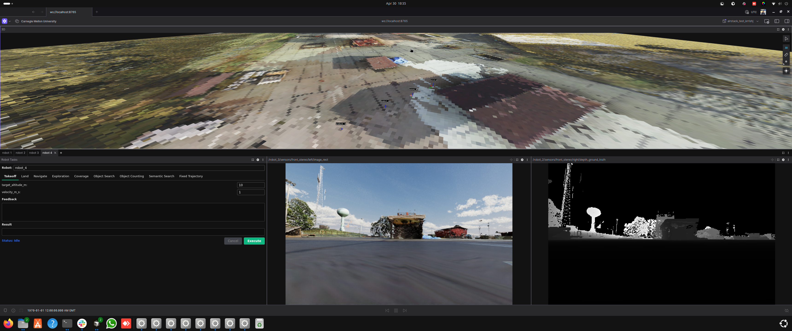

GCS Foxglove Visualization¶
The GCS runs a Foxglove Studio browser interface backed by a single ROS 2 node — foxglove_visualizer_node — that gathers per-robot data from the cross-domain bridge and republishes it on a small set of GCS-side topics. Foxglove subscribes to those topics and shows the fleet in 3D.
This page describes what the node visualizes today, the topic naming convention, and where to edit when you want to change or add a marker type. For the gossip payload visualization (filtered rays, voxel maps, etc.) see Coordination Payloads.

Connecting to Foxglove and loading the custom layout¶
The GCS container regenerates /root/airstack_layout_num_robots_<N>.json on every startup, where <N> is the current NUM_ROBOTS, using gcs/foxglove_extensions/airstack_default.json as the single-robot template (see gcs/foxglove_extensions/render_layout.py). The file lives only in the container — it's regenerated on startup and disappears on removal.
To use the locally-rendered, NUM_ROBOTS-matched layout:
- In the Foxglove dashboard, click Layouts → Import from file....
- The file browser opens in
/root/by default — select theairstack_layout_num_robots_<N>.jsonmatching yourNUM_ROBOTS. - Back on the dashboard, click Open connection and enter:
ws://localhost:8765if Foxglove is running inside the GCS containerws://localhost:8766if Foxglove is running on the host
- In the top-right corner, click the current layout name and select the imported layout from the dropdown.
Foxglove keeps the imported layout in its IndexedDB and re-activates it on subsequent launches — re-import only when you change NUM_ROBOTS or edit the template.
What gets visualized¶
The visualizer auto-discovers any robot whose topics match the AirStack convention (default prefix: robot). For each discovered robot it subscribes to a fixed set of suffixes:
| Suffix | Type | What it becomes on the GCS |
|---|---|---|
/interface/mavros/global_position/global |
NavSatFix |
Robot location pin on the Map panel |
/odometry_conversion/odometry |
Odometry |
Body-frame pose / orientation arrow |
/trajectory_controller/trajectory_vis |
MarkerArray |
Live executing trajectory |
/global_plan |
Path |
Global plan polyline |
/vdb_mapping/vdb_map_visualization |
Marker |
Per-robot VDB occupancy mesh |
All of these are published by individual robots in their local map frame (origin = drone boot position). The visualizer translates them into a single global map frame on the GCS using each robot's GPS boot offset, and merges everything into one MarkerArray.
Output topics¶
| Topic | Type | What it carries |
|---|---|---|
/gcs/robot_markers |
MarkerArray |
Combined per-robot markers (mesh, trajectory, plan, VDB) in global ENU |
/gcs/{robot_name}/location |
NavSatFix |
Per-robot GPS rewritten to frame_id='map' — Foxglove's Map panel only accepts it that way |
/gcs/map_origin/location |
NavSatFix |
Stationary fix at the configured ORIGIN_LAT/LON so the Map panel has a fixed reference |
/gcs/sim_ground |
Marker |
Sim overhead-camera output rendered as a textured ground plane (sim only) |
/gcs/payload/{robot}/{name} |
varies | Per-robot gossip-payload republish (one topic per registered handler) |
Discovery loop¶
_discover_robots runs every 5 seconds. It calls get_topic_names_and_types(), regex-matches each suffix above, and creates a subscription if it sees a topic it doesn't already track. Robots that come online late are picked up on the next tick.
To change which prefix is matched (e.g. you renamed robots from robot_* to drone_*), set the robot_name_prefix parameter on the visualizer node.
How to modify or add a marker type¶
The visualizer is designed to be extended in-place. The pattern, taken from gcs/ros_ws/src/gcs_visualizer/gcs_visualizer/foxglove_visualizer_node.py:
1. Add a suffix and regex¶
PLAN_SUFFIX = '/global_plan'
self._plan_pattern = re.compile(rf'^/({re.escape(self._prefix)}_\w+){re.escape(PLAN_SUFFIX)}$')
2. Add state¶
3. Subscribe in _discover_robots¶
if topic not in self._subscribed_plan:
m = self._plan_pattern.match(topic)
if m and 'nav_msgs/msg/Path' in type_list:
name = m.group(1)
self.create_subscription(
Path, topic,
lambda msg, n=name: self._plan_callback(msg, n),
10, # 10 = default RELIABLE for planning topics;
# SENSOR_QOS for high-rate sensor streams
)
self._subscribed_plan.add(topic)
4. Add a callback¶
5. Render in _publish_markers¶
plan = self._global_plans.get(robot_name)
boot = self._gps_boot.get(robot_name)
if plan is not None and boot is not None:
bx, by, bz = boot
line = Marker()
line.header.frame_id = 'map'
line.ns = f'{robot_name}_global_plan'
line.type = Marker.LINE_STRIP
for ps in plan.poses:
p = ps.pose.position
line.points.append(Point(x=p.x + bx, y=p.y + by, z=p.z + bz))
array.markers.append(line)
6. Bridge the source topic across DDS domains¶
The visualizer can only subscribe to topics that crossed the DDS bridge. Add the source topic to robot/ros_ws/src/autonomy_bringup/onboard_all/config/dds_router.yaml under allowlist:
Then restart the robot containers — the router only re-reads its allowlist on startup.
Bridging a topic without writing a callback¶
If your topic is already in a Foxglove-native type (nav_msgs/Path, sensor_msgs/PointCloud2, visualization_msgs/MarkerArray) and doesn't need the GPS offset, you can skip the visualizer entirely — just bridge it through the DDS router and add a panel in Foxglove pointing at the topic. The visualizer is only required when you need georeferencing or want everything to flow through the combined /gcs/robot_markers namespace.
Sim-only: textured overhead ground¶
When running in sim, the visualizer also subscribes to /sim/overhead/image + /sim/overhead/spec. On receiving both, it builds one TRIANGLE_LIST marker on /gcs/sim_ground (latched) and tears down its subscriptions. See 2D World Map in Foxglove for the producer side.
Troubleshooting¶
| Symptom | Likely cause |
|---|---|
| Robot doesn't appear at all | Source topic isn't in the DDS router allowlist, or the GPS topic isn't publishing yet |
| Robot appears at the wrong global location | First GPS fix had wrong altitude datum, or PX4 home wasn't set (sim) |
| Markers double-offset (visibly twice as far from where they should be) | Both pose.position and points[] were offset in the render loop |
| New marker added but never shows up | Discovery hasn't fired yet (5 s interval), or topic name doesn't match the regex |
Foxglove "frame map does not exist" |
The static world → map TF didn't reach Foxglove — restart the GCS container |
See also¶
- Coordination Payloads — extending visualization with gossip-broadcast payloads
- Adding Waypoints and Geofences — interactive click-to-place editors
- Overhead Camera — sim-side ground texture producer
.agents/skills/visualize-in-foxglove— agent workflow for adding a topic